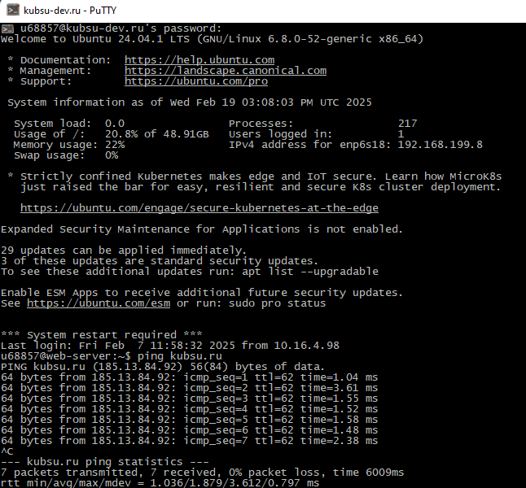

С помощью команды ping на учебном сервере узнаем IP-адрес веб-сервера kubsu.ru:
С помощью команды nslookup узнаем A-записи и MX-записи домена kubsu.ru и kubsu-dev.ru:

С помощью команды whois узнаем дату регистрации домена kubsu.ru и kubsu-dev.ru:
С помощью программы FileZilla соединимся с учебным сервером по протоколу SFTP и скопируем на локальный компьютер файлы задания из каталога www: